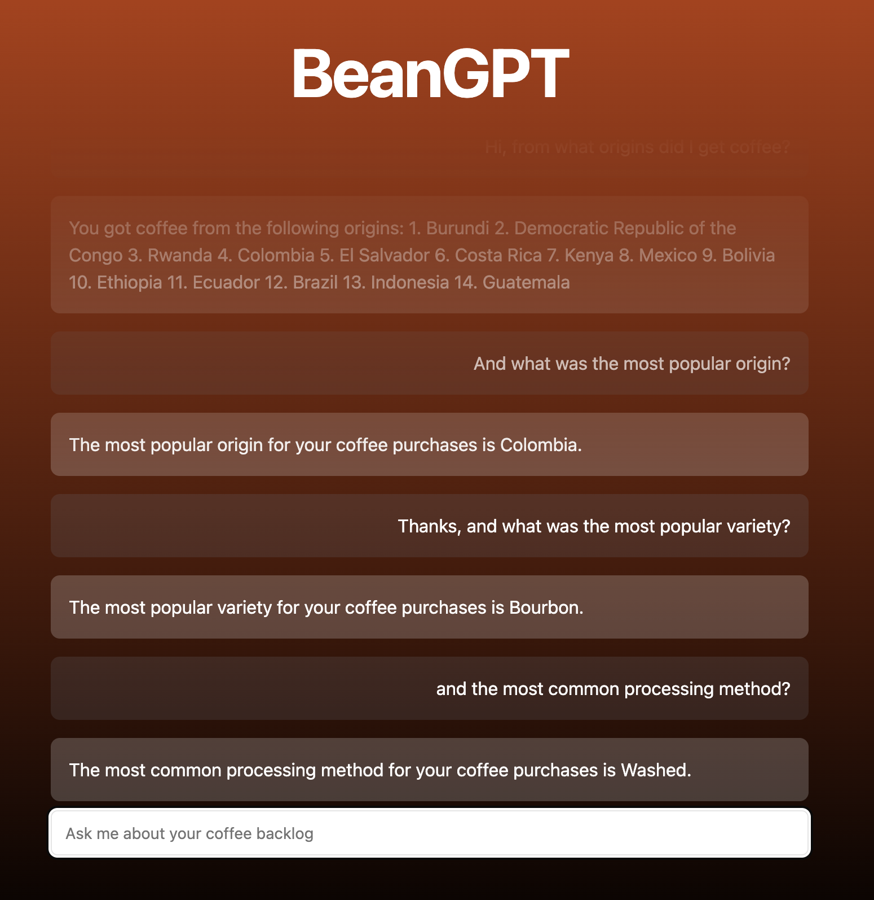
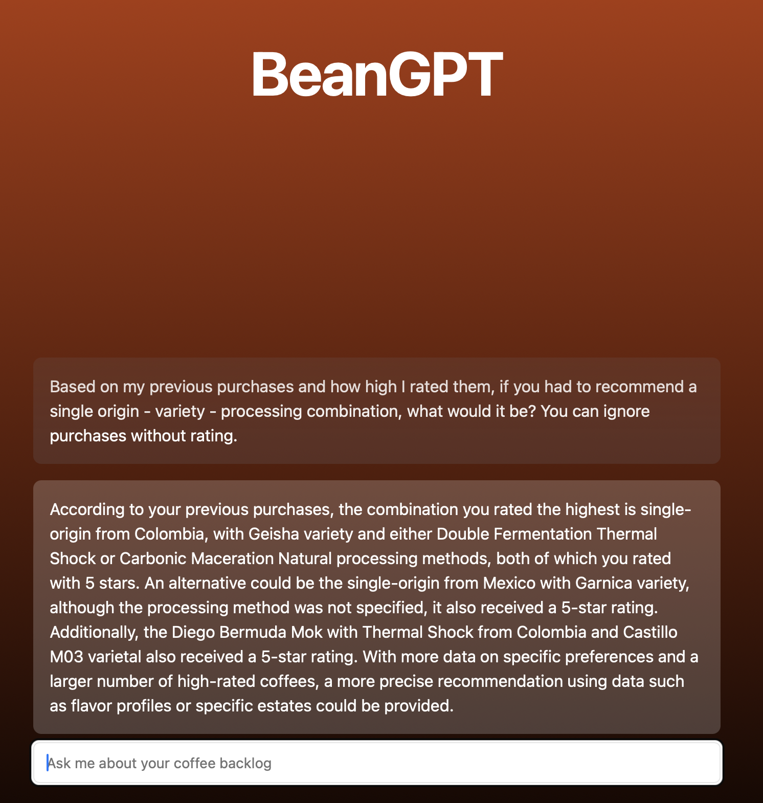
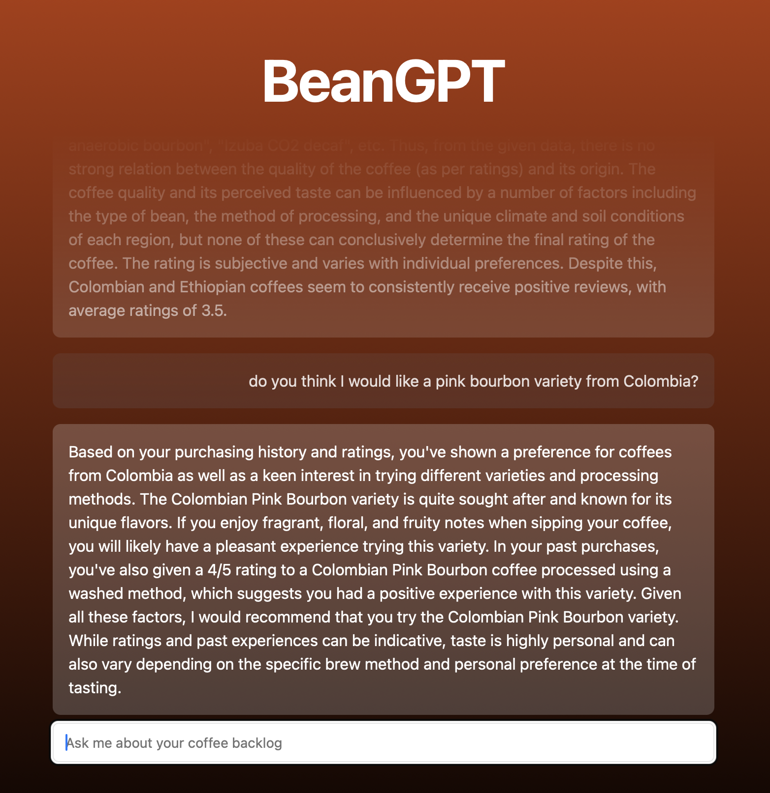

BeanGPT
Had a couple of hours to spare and thought it might be fun to use OpenAI to keep track of my coffee purchases. I had never worked with the OpenAI API before, so this seemed like a fun project to spent 2-3 hours on.
The data
I’m using Beanconqueror for the data. I already wrote the parsers for both Beanstats and my website, so it was very quick to set up. Since the raw data is too much to process, I transferred the data into text and provided instructions to the OpenAI API.
An entry would look like this: coffee: lord voldemort;3;200;16.2, bean information: colombia;wush wush;natural;huila;null;deiro garcia;null;.
The values are: name, rating, weight, price, country, variety, processing, region, farm, farmer, elevation.
The chat
After uploading a Beanconqueror zip file, BeanGPT will create two system messages to instruct the OpenAI API. The first message
contains the instruction where I explain the data, the second message is the coffee data. These messages are always sent to the API, but
the frontend filters these messages.
Any subsequent messages are sent as a user message, allowing me to chat with my coffee stats 😄☕️.
The result



The code
Project was set up using T3, using TypeScript and Tailwind. I also included Shadcn’s component library. The code can be found at my Github page.
The backend is fairly simple, a Next.js API route which sends the messages to OpenAI with the stream option set to true.
Vercel’s AI SDK then converts the response to a ReadableStream using the StreamingTextResponse helper.
import {OpenAIStream, StreamingTextResponse} from "ai";
import {type Messages, streamChat} from "~/lib/openai/stream";
export const runtime = "edge";
interface RequestWithJSON extends Request {
json: () => Promise<{messages: Messages}>
}
export async function POST(req: RequestWithJSON) {
const { messages } = await req.json();
const res = await streamChat(messages);
// Convert to stream and return
const stream = OpenAIStream(res);
return new StreamingTextResponse(stream);
}
The AI SDK provides a useChat hook which makes it easy to generate a chat interface in the frontend
"use client"
import {useChat} from "ai/react";
import {Input} from "~/components/ui/input";
import {ChatMessages} from "~/components/chat/messages";
import {useMessageStore} from "~/components/upload-form/store";
export default function Chat() {
const initialMessages = useMessageStore(state => state.messages)
const {messages, input, handleInputChange, handleSubmit} = useChat({
initialMessages,
})
return (
<div className={"mx-auto w-full max-w-2xl"}>
<ChatMessages messages={messages} />
<form onSubmit={handleSubmit}>
<Input
value={input}
placeholder={"Ask me about your coffee backlog"}
onChange={handleInputChange}
className={"text-foreground"}
/>
</form>
</div>
)
}